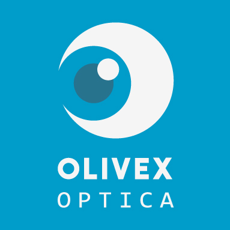
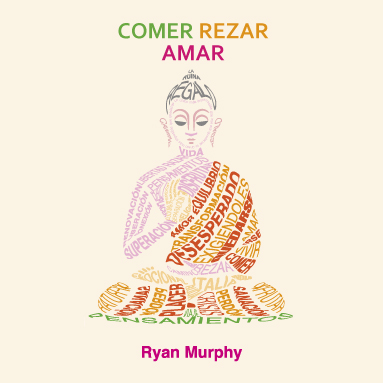
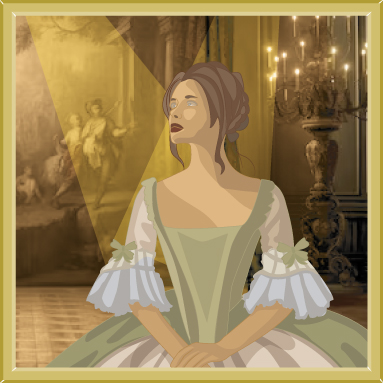
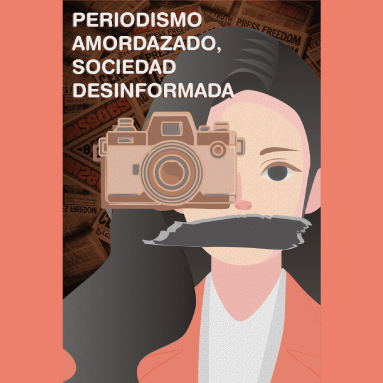
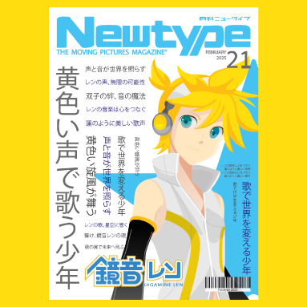
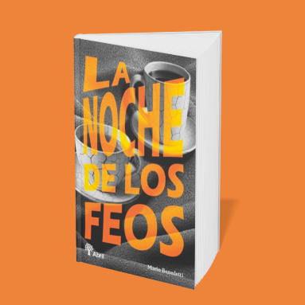
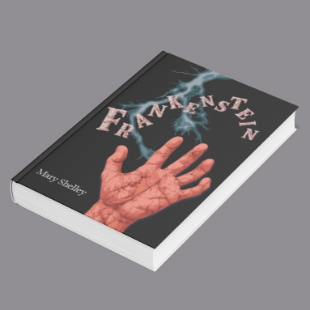
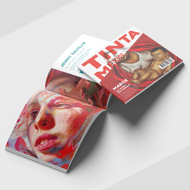
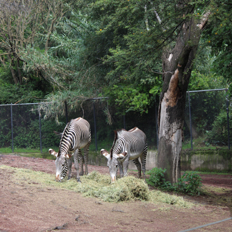
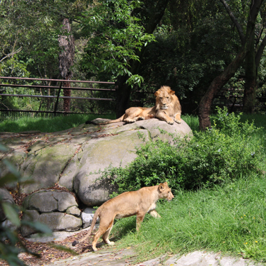

Estos son algunos de mis proyectos más destacados:










Olivex Óptica
Identidad visual creada para una óptica. El diseño del logotipo busca transmitir confianza y modernidad a través de formas limpias y el uso de tonos azules que evocan claridad y salud visual.
Comer Rezar Amar (Portada de libro)
Rediseño de portada inspirado en la obra “Comer, Rezar, Amar”. Se empleó un estilo minimalista y elementos gráficos que reflejan espiritualidad y equilibrio emocional..
Modos de ver
Ilustración digital inspirada en retratos del periodo renacentista. Se buscó resaltar la iluminación clásica y los detalles en vestimenta para dar un aspecto elegante y nostálgico.
Cartel conceptual que critica la relación entre los medios de comunicación y la desinformación. La composición utiliza elementos visuales del periodismo y el retrato humano para generar reflexión.
Revista Newtype (Diseño editorial)
Diseño de portada para una revista de estilo japonés, combinando tipografía en kanji con una ilustración de personaje anime para transmitir dinamismo y cultura pop.
La noche de los feos (Libro)
Diseño de portada para una novela que juega con el contraste entre tipografía audaz y elementos visuales sombríos para captar la atención del lector. La composición transmite misterio y cierta tensión que conecta con el tono del texto.
Frankenstein (Libro)
Portada conceptual que representa el clásico literario a través de una imagen impactante y simbólica: una mano herida que evoca la creación y el conflicto central del relato. El diseño utiliza colores oscuros y tipografía irregular para potenciar el efecto dramático.
Diseño editorial - Revista Tinta
Proyecto editorial que combina ilustración y fotografía para explorar temas de arte contemporáneo. Se priorizó una composición llamativa y texturas realistas en la portada.
Fotografía de fauna - Cebras
Fotografía tomada en entorno natural que busca resaltar la interacción y comportamiento de las cebras, capturando su entorno verde y detalles en su pelaje.
Fotografía de fauna - Leones
Fotografía que retrata el descanso de una manada de leones en su hábitat. La composición enmarca la calma del momento y la majestuosidad del animal..